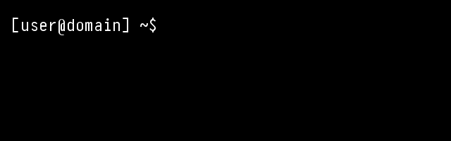
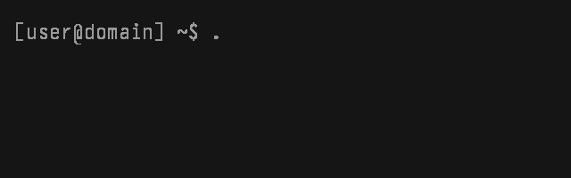
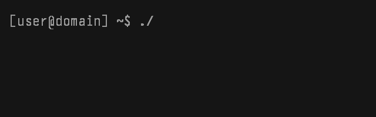

Roadmapfavorite build
Cloud Player
A cloud media player experiment with a clean player, grouped media library views, and provider integrations that do not bury the user in raw files.
personal code garage // open-source chaos bench
A living workshop for PowerShell tools, Linux scripts, Telegram bots, media encoders, Android experiments, 3D printing helpers, and small utilities that got tired of being ideas.
featured builds
The repo is not trying to be sterile. It is a working garage: tools that run, scripts that solve annoying problems, and experiments that get refined until they feel right.
A cloud media player experiment with a clean player, grouped media library views, and provider integrations that do not bury the user in raw files.
A Windows utility with a better UI, app icon, cleaner startup, and repo-ready presentation.
Album art, playlist cleanup, safer startup, better logging, and button polish.
CD ripping, FLAC workflows, MusicBrainz fallback, cover art, and actual file renaming.
Blu-ray/DVD/CD tools with metadata sidecars, subtitle handling, audio mapping, and samples.
Small Android experiments, game builds, icons, screenshots, and release-ready pages.
repo map
The site now presents the project like a command center instead of a folder dump: Windows tools, Pi scripts, bots, media workflows, Android builds, games, and 3D printing.
git clone https://github.com/MikereDD/It-Works-On-My-Machine
telegram bench
Five small helpers with specific jobs, running from the Pi lab instead of pretending to be a giant platform.
YTBot for downloads, format choices, queue handling, and shared-link watch.
/dl /audio /clip /hd /fullAIBot for prompts, image ideas, conversion helpers, and style experiments.
/ask /image /convert /stylesMusicBot for library search, dashboard browsing, metadata, and playback helpers.
/song /find /library /artistsNews bot concept: the messenger slot for current events, alerts, feeds, and useful signal.
news wire // messenger // bringer of newsAngel bot slot included in the lineup, ready for its exact job, commands, and personality.
reserved // pending role // angel benchterminal mood



“Make it useful. Keep it weird. Leave the repo better than it was yesterday.”
The vision can change. The philosophy should not. Build the thing, test the ugly part, write down what worked, and let the code remain available for whoever finds it later.